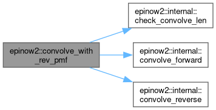
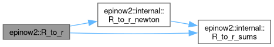
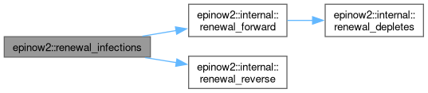

|
EpiNow2 Stan Functions
|
|
EpiNow2 Stan Functions
|
Namespaces | |
| namespace | internal |
Functions | |
| template<typename T0 , typename T1 , stan::require_all_eigen_col_vector_t< T0, T1 > * = nullptr> | |
| Eigen::Matrix< stan::return_type_t< T0, T1 >, Eigen::Dynamic, 1 > | convolve_with_rev_pmf (const T0 &x, const T1 &y, const int &len, std::ostream *) |
| template<typename T0 , typename T1 , stan::require_stan_scalar_t< T0 > * = nullptr, stan::require_eigen_col_vector_t< T1 > * = nullptr> | |
| stan::return_type_t< T0, T1 > | R_to_r (const T0 &R, const T1 >_rev_pmf, const double &abs_tol, std::ostream *) |
| template<typename T0 , typename T1 , typename T2 , typename T3 , stan::require_all_eigen_col_vector_t< T0, T1, T2 > * = nullptr, stan::require_stan_scalar_t< T3 > * = nullptr> | |
| Eigen::Matrix< stan::return_type_t< T0, T1, T2, T3 >, Eigen::Dynamic, 1 > | renewal_infections (const T0 &seed, const T1 &R, const T2 &g, const T3 &pop, const int &use_pop, const double &pop_floor, const int &nht, std::ostream *) |
Convolution of a vector with a reversed PMF, with a reverse-mode adjoint.
Implements convolve_with_rev_pmf(x, y, len) from inst/stan/functions/convolve.stan.
Notation (1-based, as in the Stan code): x has length n, y has length D and is the reversed PMF, and z is the output of length len, with n <= len <= n + D - 1. The weight of lag d (d = 0, ..., D - 1) is w_d = y_{D - d}, and x_s = 0 outside 1, ..., n.
Forward: z_t = sum_{d = 0}^{D - 1} w_d x_{t - d}, t = 1, ..., len. This is evaluated lag by lag, one vector update per lag, z_{d+1:d+m} += w_d x_{1:m}, m = min(n, len - d), which is z_{d+1:n} += w_d x_{1:n-d} when len = n. When len > n the output runs past the end of x and m caps the update at the last input, so the extra outputs are the tail of the full convolution.
Reverse: the adjoint of a convolution is the matching correlation. With zbar the adjoint of z, for each lag d xbar_{1:m} += w_d zbar_{d+1:d+m}, wbar_d += zbar_{d+1:d+m}^T x_{1:m}, and ybar_{D - d} = wbar_d.
Both passes run on doubles in one reverse_pass_callback, so the convolution is one autodiff node rather than one dot_product() node per output. x and y may each be var or double. The function is put in stan::math so that Stan-generated code finds it.
Growth rate from the reproduction number with a reverse-mode adjoint.
Backs the Stan function R_to_r(R, gt_rev_pmf, abs_tol) declared in inst/stan/functions/rt.stan.
Notation: p is the generation time PMF, the reverse of gt_rev_pmf, with p_k the weight of a gap of k = 0, ..., G - 1 days. The growth rate r is the root of f(r; R, p) = R sum_k p_k exp(-r k) - 1.
Forward. Newton's method on doubles. Start at r = fmax((R - 1) / (R m), -1), with m = sum_k k p_k the mean generation time, and take steps f / f_r until a step is no larger than abs_tol in absolute value or 100 steps have been taken. The value returned is r after the last step. f is convex and decreasing in r, so from the first step on Newton approaches the root from one side and converges quadratically; the cap only guards against pathological inputs. This code is based on Julia code from https://github.com/CDCgov/Rt-without-renewal/blob/d6344cc6e451e3e6c4188e4984247f890ae60795/EpiAware/test/predictive_checking/fast_approx_for_r.jl under Apache license 2.0.
Reverse. By the implicit function theorem, at the returned r dr/dR = -f_R / f_r = S0 / (R S1), dr/dp_k = -f_p_k / f_r = exp(-r k) / S1, with S0 = sum_k p_k exp(-r k), S1 = sum_k k p_k exp(-r k) and f_r = -R S1. So rbar is passed back as Rbar += rbar S0 / (R S1) and gt_rev_pmfbar[G - 1 - k] += rbar exp(-r k) / S1.
This is the gradient of the root, which does not require recording the Newton steps on the autodiff tape. It agrees with the gradient through the steps to within the solver tolerance.
Either of R and gt_rev_pmf may be var or double; only the gradients of var inputs are computed. As with convolve_with_rev_pmf(), the function lives in namespace epinow2 and is made visible in stan::math.
Renewal equation with a reverse-mode adjoint.
Backs the Stan function renewal_infections(seed, R, gt_rev_pmf, pop, use_pop, pop_floor, nht) declared in inst/stan/functions/infections.stan, which is the loop of generate_infections() after the seeding infections are set.
Notation (1-based, as in the Stan code): the seeding infections are I_1, ..., I_{t_s}, R_t (t = 1, ..., T) is the reproduction number, g is the reversed generation time PMF of length G, and the generation time weight of a gap of tau days is g_tau = gt_rev_pmf[G - tau].
Forward, for t = 1, ..., T with u = t_s + t: lambda_t = sum_{tau = 1}^{min(G, u) - 1} g_tau I_{u - tau}, the total infectiousness (the tau = 0 term pairs with I_u, which is not yet set). Without susceptible depletion I_u = R_t lambda_t. With depletion (use_pop = 2, or use_pop = 1 and t > nht) S_t = fmax(pop_floor, pop - I^c_t), a_t = R_t lambda_t / S_t, I_u = S_t fmax(0, 1 - exp(-a_t)), where I^c_1 is the sum of the seeding infections and I^c_{t + 1} = I^c_t + I_u.
Reverse. Write xbar for the gradient of the target with respect to x. Walk t = T, ..., 1. When step t is reached, Ibar_u already holds every contribution from later times (through lambda and I^c). Then no depletion: Rbar_t = Ibar_u lambda_t, lambdabar_t = Ibar_u R_t; depletion: with e_t = exp(-a_t), abar_t = Ibar_u S_t e_t, Rbar_t = abar_t lambda_t / S_t, lambdabar_t = abar_t R_t / S_t, Sbar_t = Ibar_u (1 - e_t) - abar_t a_t / S_t, popbar += Sbar_t and I^cbar_t -= Sbar_t when S_t = pop - I^c_t; then Ibar_{u - tau} += lambdabar_t g_tau, gbar_tau += lambdabar_t I_{u - tau}, and I^cbar_t is passed back to I_{u - 1} and I^cbar_{t - 1}. Finally the seeding infections receive Ibar_{1:t_s} + I^cbar_1. The fmax() branches follow Stan's fmax(): the second argument is taken, with its gradient, when it is at least the first and not NaN.
The forward pass and this reverse walk work on plain doubles, so the whole renewal loop is one autodiff node, rather than one dot_product() plus several scalar nodes per time step. Any of seed, R, gt_rev_pmf and pop may be var or double; only the gradients of var inputs are computed. As with convolve_with_rev_pmf(), the function lives in namespace epinow2 and is made visible in stan::math.
|
inline |
Convolve x with the reversed PMF y, returning a vector of length len.
The last argument is the output stream of the Stan calling convention, which is not used.
| x | Input vector (var or double). |
| y | Reversed PMF (var or double). |
| len | Output length, n <= len <= n + D - 1. |
| std::domain_error | if len is outside that range. |
Definition at line 135 of file convolve_with_rev_pmf.hpp.
References epinow2::internal::check_convolve_len(), epinow2::internal::convolve_forward(), and epinow2::internal::convolve_reverse().

|
inline |
Estimate the growth rate r from the reproduction number R.
The last argument is the output stream of the Stan calling convention, which is not used.
| R | Reproduction number (var or double). |
| gt_rev_pmf | Reversed generation time PMF (var or double). |
| abs_tol | Absolute tolerance of the Newton solver (double). |
Definition at line 122 of file R_to_r.hpp.
References epinow2::internal::R_to_r_newton(), and epinow2::internal::R_to_r_sums().

|
inline |
Run the renewal equation after the seeding infections.
The last argument is the output stream of the Stan calling convention, which is not used.
| seed | Seeding infections, length t_s >= 1 (var or double). |
| R | Reproduction numbers, length T (var or double). |
| g | Reversed generation time PMF (var or double). |
| pop | Initial susceptible population (var or double). |
| use_pop | Population adjustment (0 none, 1 after nht, 2 all). |
| pop_floor | Minimum susceptible population (double). |
| nht | Number of time steps before the population adjustment starts when use_pop = 1. |
| std::domain_error | if seed is empty. |
Definition at line 239 of file renewal_infections.hpp.
References epinow2::internal::renewal_state< Vec >::a, epinow2::internal::renewal_state< Vec >::e, epinow2::internal::renewal_state< Vec >::flag, epinow2::internal::renewal_state< Vec >::I, epinow2::internal::renewal_state< Vec >::lambda, epinow2::internal::renewal_forward(), epinow2::internal::renewal_reverse(), and epinow2::internal::renewal_state< Vec >::S.
